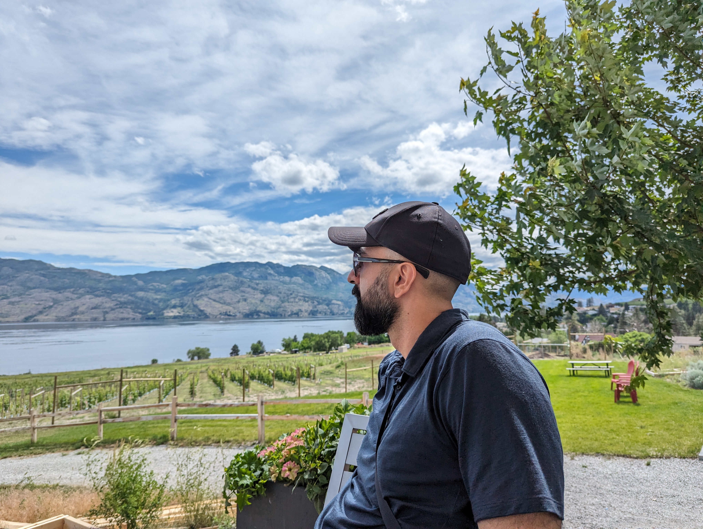

From Data Science to Machine Learning

ذرات بدنم از چهارده میلیارد سال پیش سفر خود را آغاز کردند..... مدرک دکتری خود را در فیزیک و نجوم، با تخصص در اخترفیزیک، از دانشگاه کلگری در آلبرتا، کانادا کسب کردم. امروزه در دانشگاه پلیتکنیک کوانتلن، دروس فیزیک، اخترشناسی و علم داده را تدریس میکنم. این کار رضایتبخش است، اما من در حسرت تدریس به زبان فارسی برای فارسی زبانان هستم. از این رو، آکادمی بلند آسمان رو شروع کردم! شاید به این روش، بتوانم در سفر چهارده میلیارد ساله خود، به آنچه دلخواه من هست دست پیدا کنم و علم را به مردم ایرانزمین، نسل بعدی علاقهمندان علم، به شیوهی خودم، معرفی کنم.
The particles of my body began their journey fourteen billion years ago. I earned my doctorate degree in Physics & Astronomy, specializing in astrophysics, from the University of Calgary in Alberta, Canada. Today, I teach physics, astronomy, and data science at Kwantlen Polytechnic University. While this is fulfilling, I dream of teaching in Persian. Hence, the Academy of Tall Dome! Perhaps in this way, I can fulfill my 14 billion-year journey and introduce science to the Iranian people, the next generation of science enthusiasts, in the way I desire.
From Data Science to Machine Learning

Python Necessities for Data Science

Astronomy for Fun
I'm Dr. Kianoosh Tahani, and I'm absolutely thrilled about sharing my expertise in the captivating fields of astronomy, data science, and physics. If you are interested please get in touch.